Method: all 12 PNGs read, then measured from the WAVs in ~/www/summaries/audio. Per note window (each 0.25 s, 120 ms after onset) I measured the highest harmonic within 60 and 80 dB of the window peak, the inharmonic peaks, the release decay times and the engine-only bursts above 15 kHz. Scripts are in the session scratchpad: specforensics.py, f005.py, tails.py.
Notes are MIDI 48, 60, 64, 67, 72 (36, 43, 48, 55, 60 for 033 and 039), each 0.4 s with a 0.1 s gap.
Heatmap caveat: render_spec12.py sets vmax = max − 80 dB, so everything within 80 dB of the loudest bin is pegged yellow. "Height" in the image therefore means "harmonics within 80 dB of the peak", and a louder side does look taller. The ceilings below were measured per harmonic, not read off the colours.
spec_osc.md §5.1 / wavetable_gen.cpp:122 derive harmonics[j] = 27.5·cos(j/36), a 27.5 → 15.5 range with thresholds 802 → 1423 Hz. As a result:
- Every note below 802 Hz uses band 0, which has H = 27. The measured engine harmonic count stops at exactly 27 whenever the VST goes higher.
- Every partial above 1423 Hz uses band 35, which has H = 15. That puts the partial's harmonics far above Nyquist, where they fold back (aliasing).
The VST behaves like a pitch-dependent ladder, H ≈ 22050/f. In 101 it keeps 152 harmonics at C3 (Nyquist allows 168) and 74 at C4 (83 allowed). Patch 005's 6.68 kHz osc2 partial shows only harmonics 1–2.
Conclusion: the decoded band law is wrong. My hypothesis is that 27.5 is A0 in Hz, not a harmonic count, and that the callee decoded as cos is really an exponential: something like thr_j = 27.5·2^(j/4), i.e. 36 bands at 3 semitones each spanning 9 octaves, with H_j = (int)(22050/thr_j). Two other signs point the same way: the (int)thr < 16 → break guard and the prevThr de-duplication are dead code under the cos law.
To verify: re-check the callee and constants in FUN_18003cdf0, then render one saw (filter open, no FX) at about 8 pitches through the VST and fit H(f).
| Patch | xcorr / null dB | Side that reaches higher, and mechanism | Other differences |
|---|---|---|---|
| 001 brastring | 0.936 / −4.49 | VST. C3 has 41 harmonics within 80 dB on the VST vs 27 on the engine. The flat engine ceilings at 3.6k, 7.2k, 9.0k, 10.7k and 14.3k Hz are 27·f0 for each note (band law). VST ceilings taper; the engine ones are brick walls. | Engine-only full-band click at 0.244 s (+18 dB above 15 kHz). Engine tail ends 0.25 s early at −40, −60 and −80 dB (a parallel shift). Delay wet is 39. |
| 002 Piano | 0.984 / −8.11 | About equal: harmonics are filter-limited, 8–13 within 60 dB on both. | Click at 0.244 s (+10 dB). Tail 0.25 s short (delay wet 6). The VST has slightly more upper-band hash (inharmonic −75 vs −99 dB at C4). |
| 005 Rhodes | 0.874 / +2.64 | Engine, by aliasing. osc2 (shape 2, +55 semitones) puts a partial at ≈20.3·f0, i.e. 2.65, 5.3, 6.7, 8.0 and 10.6 kHz. The engine gives it the 15-harmonic band, which folds: for the 6683 Hz partial, foldover lands at 44100−6·6683 ≈ 4002 Hz (seen at 4000), 88200−12·6683 ≈ 8004 (8000), 88200−13·6683 ≈ 1321 (1317), and also 2683, 9367 and 10683 Hz. The VST shows only 6683 and 13367 Hz. Engine is +6.2 dB RMS and peaks at 0.51 vs 0.275. | +43 dB engine-only burst above 15 kHz at the 2.0 s onset. Tail 0.2 s short at −40 dB. Engine panel shows a near-zero notch at about 3.22 s before the echo resumes. |
| 017 Hammond | 0.973 / −6.67 | About equal; the engine has slightly more at C3 (32 vs 28 within 60 dB). | Click at 0.244 s (+7 dB) even though delay wet is 0. Tiny engine-only onset click at 1.921 s, where the VST is digital silence. Tails identical. |
| 033 Acoustic Bass | 0.995 / −13.26 | About equal; filter-limited (≤ 25 harmonics). | Tails identical. Small low-level differences only. |
| 039 Synth Bass 1 | 1.000 / −31.03 | VST, slightly. At C2 it has 32 harmonics within 80 dB vs 27 (band law). Visually the engine has flat ceilings while the VST's filter-envelope sweep is visible above 27·f0. Because those harmonics sit more than 60 dB down, the null is still −31 dB. | This patch shows how much the band-law gap is exaggerated by the saturated heatmap. |
| 042 Viola | 0.966 / −6.11 | VST. C3 has 34 harmonics vs 27 and E4 has 30 vs 27. The flat engine ceilings are again 27·f0. | Tails nearly equal (delay wet 2). |
| 050 SlowStrings | 0.975 / −9.80 | About equal; filter-limited (≤ 24 harmonics). | Tail 0.15 s short (delay wet 20). Chorus differences are not separable here. |
| 057 Trumpet | 0.997 / −22.12 | VST, by a lot. It has 85 / 47 / 40 / 34 harmonics within 80 dB vs 27 at every note on the engine; VST attack sweeps reach about 21 kHz. Causes: the band law, plus osc2 hard sync (on). The engine's synced slave adds no sync harmonics past 27·f0, while the VST's sync discontinuities fill the band up to Nyquist. | Tail 0.2–0.65 s short, with a slower VST decay. VST attack spikes repeat between notes (likely delay echoes, wet 4); the engine panel lacks them. |
| 062 Brass1 | 0.975 / −8.65 | About equal at C3–E4; the VST is higher at G4/C5 (15 vs 11–12 harmonics). The visible engine ceilings at 3.6k, 7.2k, 9.0k, 10.7k and 14.3k Hz are 27·f0 (band law). | Tail 0.4 s short (wet 7). The engine dry tail stops at about 2.95 s, then an echo resumes until 3.1 s (the black notch). |
| 081 Square lead | 0.972 / −6.40 | VST. Harmonics within 80 dB are 39 / 31 / 29 vs 27 / 27 / 27. Flat engine ceilings are 27·f0. | Tail 0.1–0.25 s short (wet 29), with an engine notch at about 3.95 s and an echo after it. Delay repeats are visible in both panels. The VST has more inharmonic hash (−51 vs −58 dB). |
| 101 Sequence2 | 0.900 / −2.71 | VST. Every arp step reaches about 21 kHz, vs a flat 3.7k / 7.3k on the engine's low steps. At C3 the VST has 138 harmonics within 60 dB vs 65, and at C4 74 vs 55; they converge from E4 up. Arp notes break the f0 assumption, so treat the counts as approximate. Mechanism: band law. | Engine zero gap of 18 ms at 2.62 s. Tail shorter at −40 dB (delay wet 68, feedback 0). |
Ruled out as the cause of the height differences: heatmap clipping on its own (the RMS levels match within 1 dB except 005), noise-generator bandwidth (no broadband engine excess), ladder self-oscillation (no isolated sustained engine peaks), and resampling (the high-band floor is identical in both renders).
FUN_18003cdf0 → compute_band_descriptors, wavetable_gen.cpp:122). Replace the cos-derived 27.5 → 15 harmonic range with the real pitch ladder, H ≈ 22050/f per band. This closes the ceiling gap in 001, 039, 042, 057, 062, 081 and 101, and removes the aliasing in 005 (the worst patch, +2.64 dB), where a high osc2 partial currently gets 15 harmonics instead of 2–3.core/fx/delay.*). Every patch with delay wet > 0 loses 0.1–0.65 s of tail (001, 002, 005, 050, 057, 062, 081, 101); patches with wet = 0 match exactly. 001 and 002 show a parallel 0.25 s shift, i.e. the engine is missing about one echo period. Check the wet level / dry-wet law (preset.cpp halves param 37), the feedback law, and whether FX processing stops when the voices end. The engine-only click at 0.244 s (001, 002, 017; present even at wet 0) suggests a discontinuity on the delay line's first wrap or uninitialised buffer data. Also confirm both renderers use 120 BPM, since the delay time is tempo-synced; both default to 120.H27 brick wall, measured at C3/C2, level relative to the window peak:
| Patch | Side | H26 | H27 | H28 | H30 | H34 |
|---|---|---|---|---|---|---|
| 042 | VST | −67 | −68 | −71 | −75 | −79 |
| 042 | engine | −63 | −66 | −101 | −98 | −100 |
| 001 | VST | −59 | −60 | −63 | −66 | −70 |
| 001 | engine | −58 | −60 | −86 | −85 | −90 |
| 039 | VST | −71 | −73 | −74 | −76 | −82 |
| 039 | engine | −71 | −73 | −102 | −102 | −103 |
The engine drops 25–35 dB between H27 and H28. The VST keeps rolling off smoothly, which is the shape of a pitch ladder.
Correction to 033: the band law is visible here too. Engine ceilings are flat at about 1.77k, 2.65k, 3.5k and 5.3k Hz, which is 27 × (65.4, 98, 131, 196) Hz. The VST ceilings are higher and slope with the filter envelope. The missing harmonics are more than 85 dB down, so the null (−13 dB) is unaffected.
Within 70 dB of the peak, the harmonic counts match for 033, 039 and 042. In those patches the visible height gap lives entirely in the −70 to −80 dB zone that vmax = max − 80 pegs to yellow, so the heatmap exaggerates it. 057 is a real gap within 70 dB: 70 harmonics vs 27.
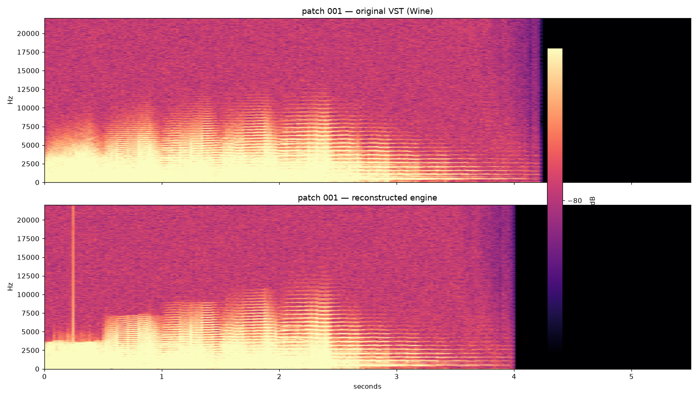
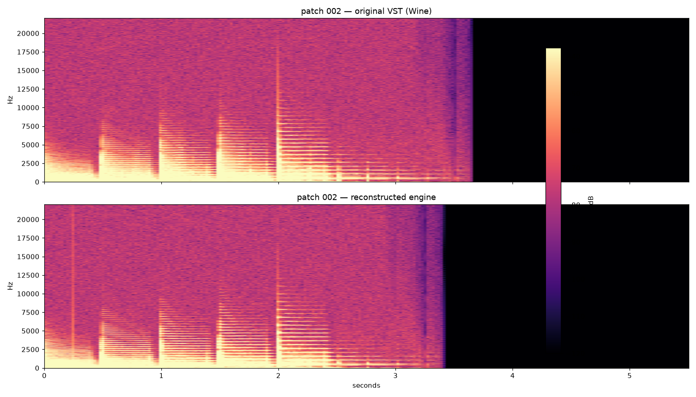
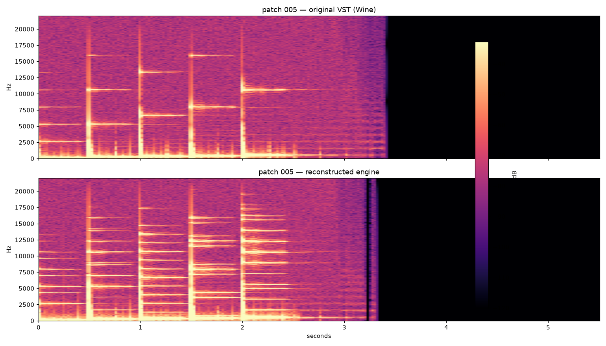
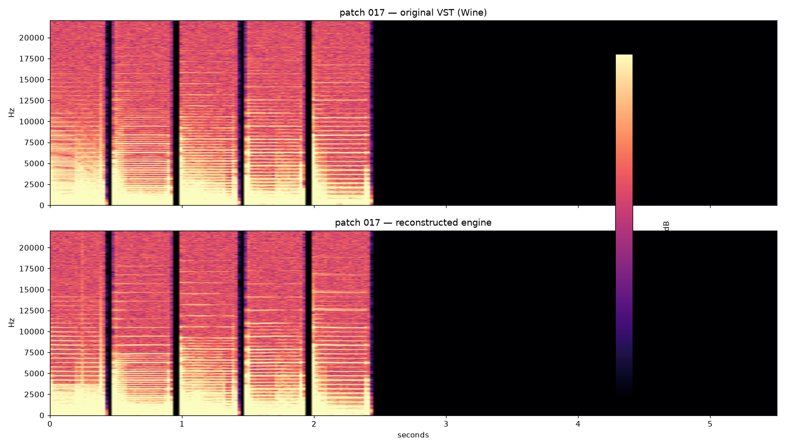
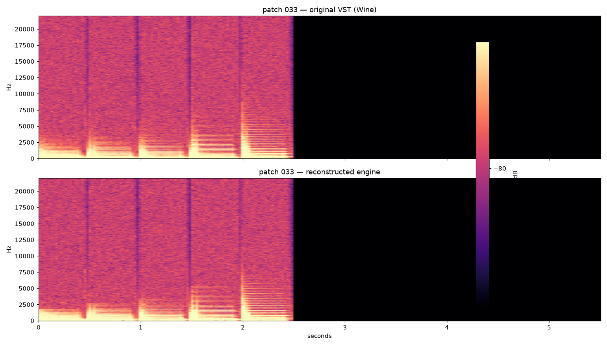
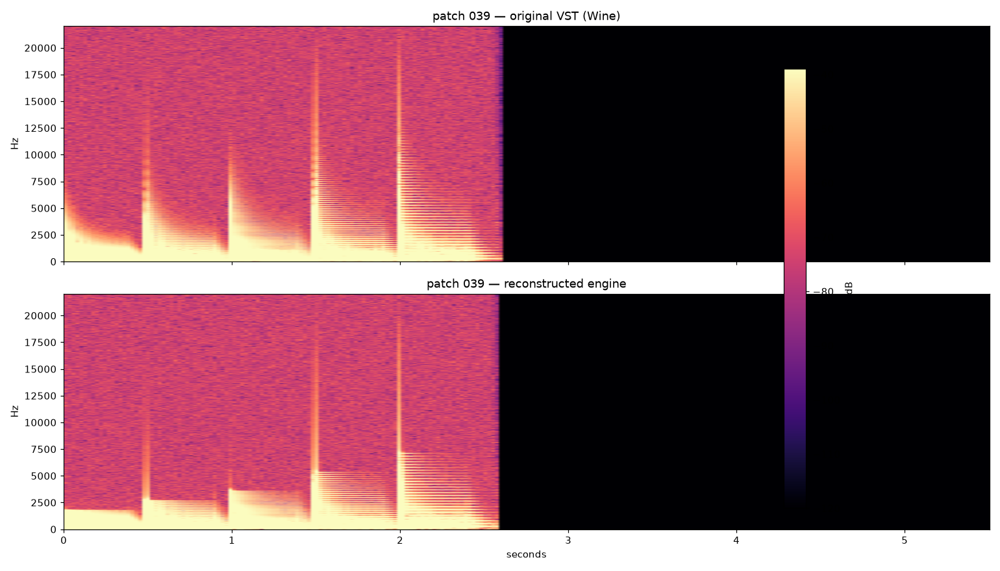
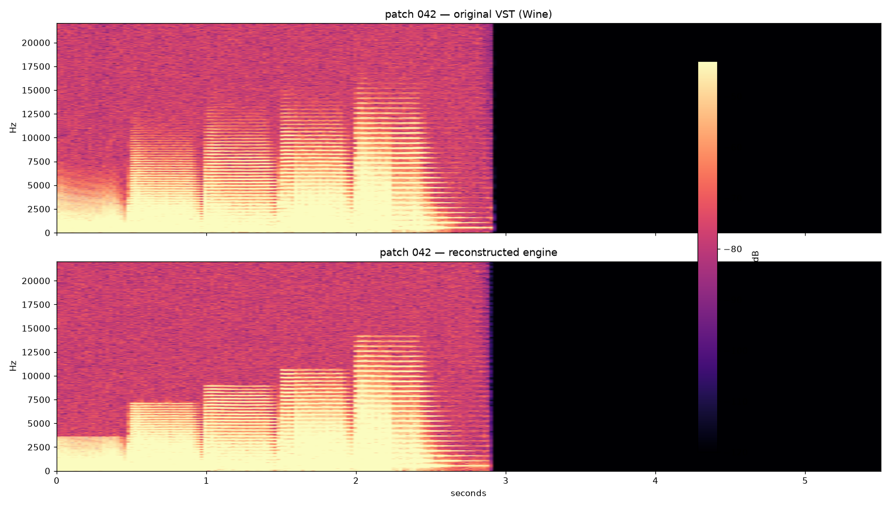
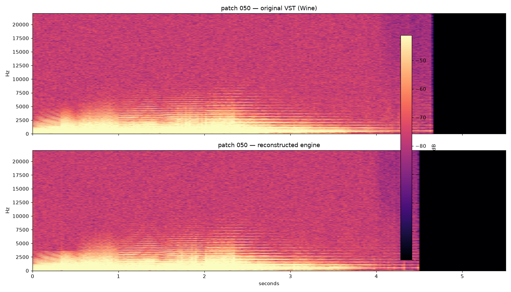
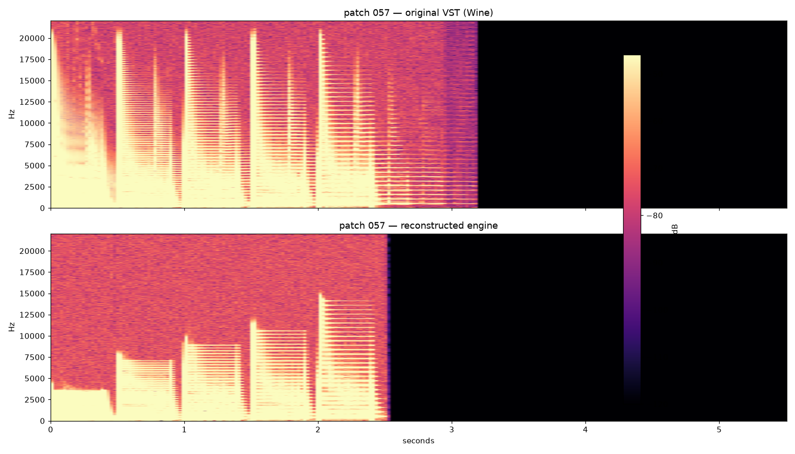
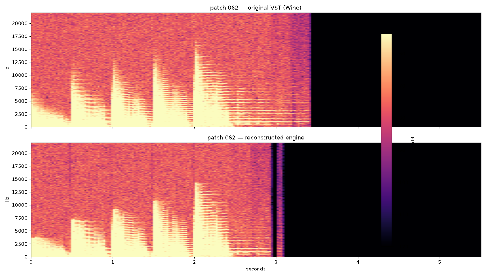
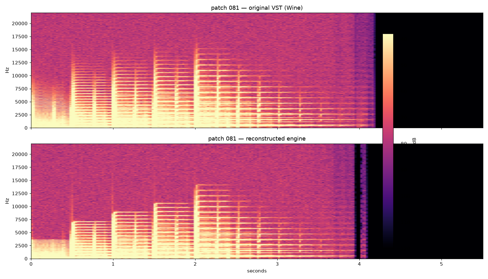
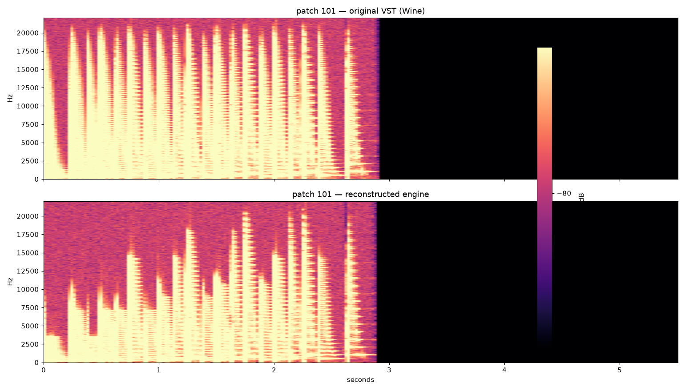
Synth1 VST reconstruction — forensic A/B report. Generated 2026-10-07. Top panel in every figure: original Synth1 VST rendered headless under Wine. Bottom panel: the reconstructed portable-synth C++ engine. Identical magma heatmap scale (shared vmin/vmax, vmax = peak − 80 dB).